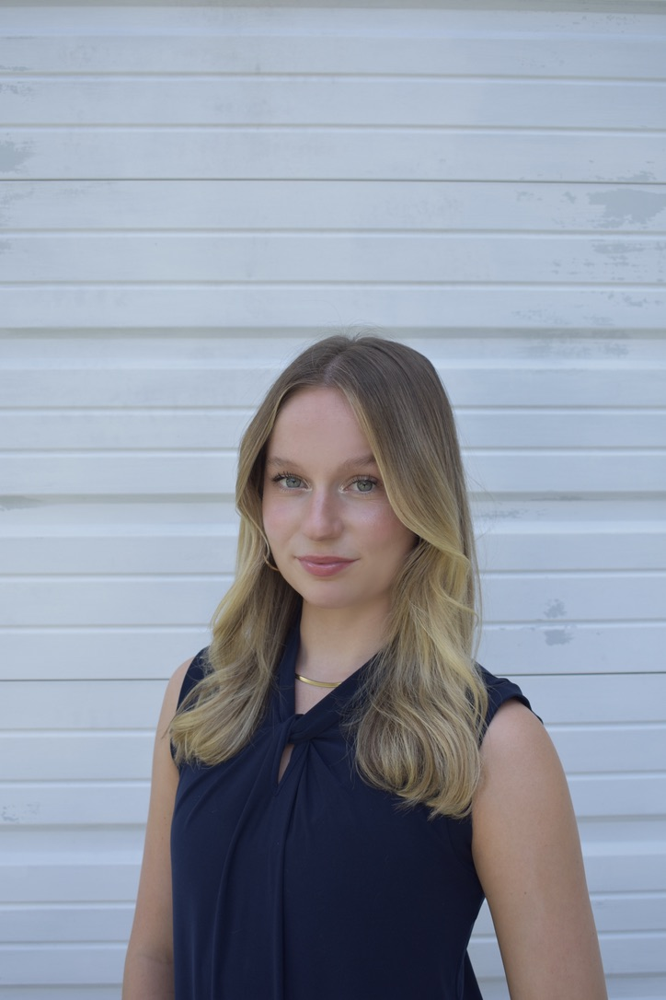

Elise Shuey
Journalist and Filmmaker
Contact Me
Experience
Technical Director
Capital News Service
Sep. 2025 - Present
-
Produced live news broadcasts twice weekly, overseeing all technical aspects and
ensuring high-quality, on-air execution.
-
Operated TriCaster production system to manage live video switching, graphics, and audio
during newscasts.
-
Collaborated closely with the show director to organize, structure, and time show
rundowns for smooth, coherent programming.
-
Coordinated in real-time with reporters, producers, and crew, troubleshooting issues and
maintaining clear communication for seamless broadcast operations.
Cinematographer
Shirley Povich Center for Sports Journalism
Aug. 2025 - Present
-
Operate camera and audio equipment for the Camden Yards Oral History Project, a
two-semester initiative led by the Shirley Povich Center for Sports Journalism to
document the creation and legacy of the historic ballpark.
-
Shoot on-location interviews with key figures, handling lighting, framing, and sound to
capture high-quality video and audio for professional oral history publication.
Media Equipment Attendant
Philip Merrill College of Journalism
Sep. 2025 - Present
-
Manage camera equipment room operations, checking gear in and out for students and staff
while ensuring all items (broadcast cameras, DSLRs, mic kits, documentary gear, tripods)
are accounted for, functional, and properly maintained.
-
Keep organization and inventory of high-value production equipment by conducting
thorough inspections and returning gear to designated storage, ensuring an efficient
workflow and preventing loss or damage.
Studio Production Volunteer
Capital News Service
Sep. 2024 - May. 2025
-
Operated various studio roles in live news production, including audio, camera,
lighting, graphics, and assistant directing.
-
Excelled in floor direction, coordinating live reporting, and ensuring real-time
communication with reporters and the program director.
-
Collaborated with production teams to resolve technical issues quickly, minimizing
disruptions during broadcasts.
-
Supported a fast-paced, student-led live news show, managing multiple tasks to maintain
high production standards under tight deadlines.
Social Media Content Creator
Society of Professional Journalists / Stories Beneath the Shell
Sep. 2024 - May 2025
-
Created graphics, reel-style videos, and infographics to promote ethical journalism and
engage SPJ's student chapter at UMD.
-
Collaborated with journalism faculty and students to feature industry professionals and
share real-world insights.
-
Designed and wrote social media content to boost visibility and highlight underreported,
diverse stories on campus.
-
Supported fundraising efforts by using social media to raise awareness and promote the
publication’s mission.
Production Assistant
Freethink Media
Oct. - Dec. 2024
-
Coordinated with Freethink directors and camera operators to achieve the desired shots
for a documentary.
-
Assisted with transporting and assembling the camera and audio equipment within the
shoot location.
-
Communicated with the shoot location employees about location restrictions and
logistical obstacles while filming.
Education
Philip Merrill College of Journalism, University of Maryland
Bachelor's in Journalism, Concentration in Cinema and Media Studies
Expected Graduation: May of 2027
Skills
- Adobe Photoshop
- Adobe Premier Pro
- Canva
- Cinematography
- Tricaster Operation
- News writing